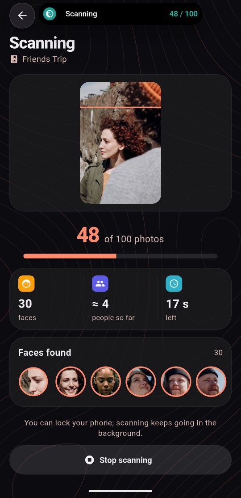
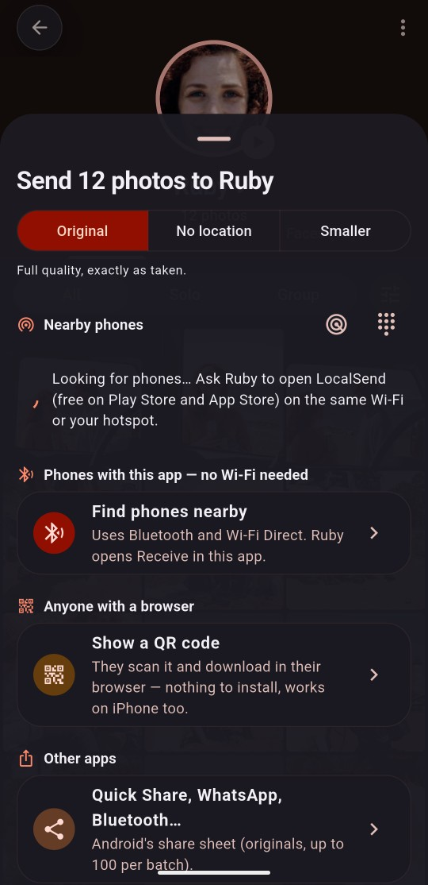
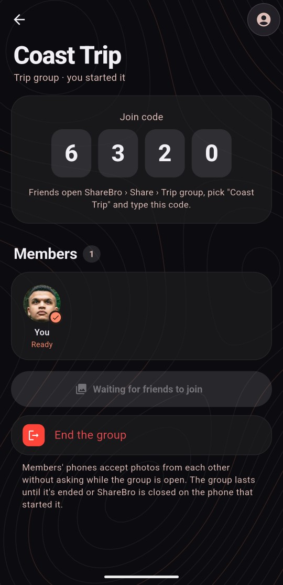
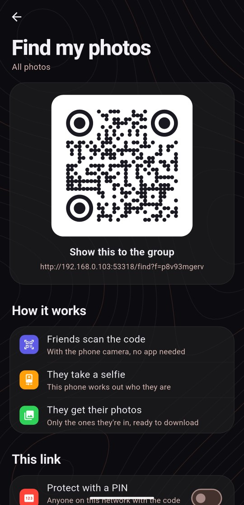
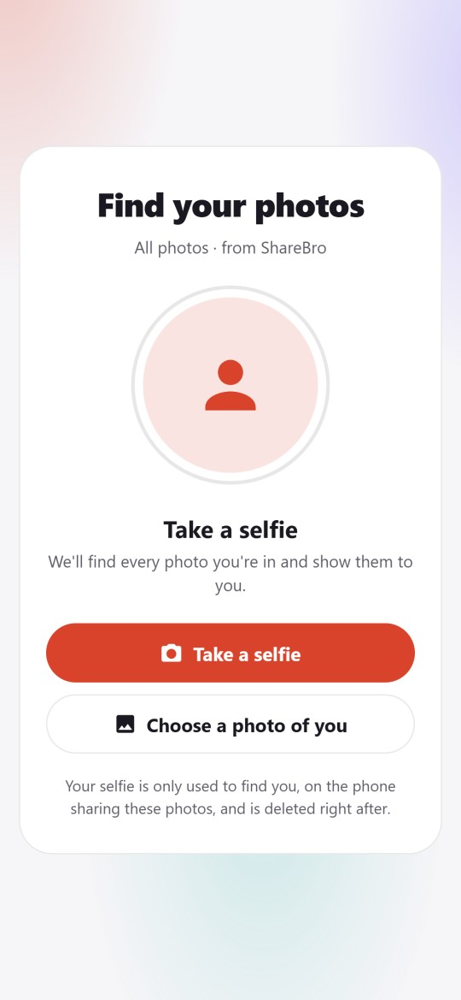
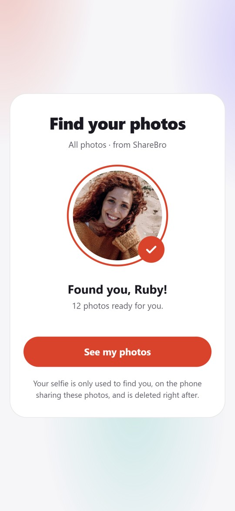

1
Scan the trip
Pick the trip's album or folder. Every face is found on your phone and the photos are grouped into one page per person.
ShareBro is a free Android app for the friend who takes all the photos. It groups thousands of trip photos by the people in them and sends each friend just their photos, at full quality. No cloud, no uploads, no account.




Then the trip ends, and everyone wants their pictures. Finding them one by one, for every friend, takes hours.
From one weekend away, all on your phone.
Each one waiting for the photos they're in.
Scrolling, choosing, sending, again and again.
ShareBro never copies or moves your photos. It looks at them on your phone, groups them by person, and sends the right ones to the right people.
Pick the trip's album or folder. Every face is found on your phone and the photos are grouped into one page per person.
Name your friends, fix the odd mistake, and drag one person onto another to merge them.

Each friend gets exactly the photos they're in, at full quality, straight to their phone.
Grid, Honeycomb or Bubbles
Drag one person onto another
Friends join with a code
Or send each friend all of theirs
Every screen on this page is the real app. The demo trip uses free stock photos from Pexels: the people are models and the names are made up.
On-device face recognition (InsightFace MobileFaceNet) keeps people together with or without glasses and at different angles.
Everyone joins with a 4-digit code. Each photo goes only to the friends who are in it, and you're asked when a face is unclear.
Friends scan a QR code and take a selfie in their browser. They get a gallery of just their photos. No app needed.
Send photos, videos, files, folders, text and apps to any device running the free LocalSend app: Android, iPhone, Windows, Mac or Linux.
ShareBro phones send to each other over Bluetooth and Wi-Fi Direct. Any Wi-Fi or hotspot works too, without internet.
Send the originals, originals without location details, or smaller copies that send faster. Your choice per send.
"Maya beach June 2026" or "Kuakata Ruby". Search understands people, places, dates, scenes and more, all offline.
Your photos on a map with town names, and the whole trip replayed in order like a travel video.
Albums, favourites, trash, duplicate clean-up and the best shot from every burst of group photos.
Show one code to the whole group. Each friend opens it in their phone's browser, takes a selfie, and lands on a gallery of only the photos they're in. Their face is matched on your phone.




The only time ShareBro uses the internet is the optional real map in Places. Everything else (scanning, grouping, search and sending) runs on your phone and your local network.
From the photographer's buzzing phone to every friend holding their own photos, all shown with the real app.
Free for Android 9 or newer. Install it, scan your last trip, and send everyone their photos tonight.